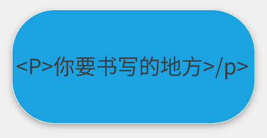

<body><div style="background-color: #f1f1f1; text-align: center; padding: 40px">
	<body leftmargin=0 topmargin=0 οncοntextmenu='return false' οndragstart='return false' onselectstart ='return false' οnselect='document.selection.empty()' οncοpy='document.selection.empty()' onbeforecopy='return false' οnmοuseup='document.selection.empty()'>
	<h2> 3.第一个代码 </h2>
            <p>大家好，我们又见面了！<br>今天我们来踏上编程的第一步，p标签。</p>
			<p>先给大家讲一下p标签是什么意思<br>打个比方p标签其实就是本子，你可以在上面写字，你的屏幕就会出现了!</p>
			<p>下面给大家演示一下</p>
			
<br><a href="2.html" _blank"="" rel="noopener noreferrer">
          上一篇 </a>
<a href="4.html" _blank"="" rel="noopener noreferrer">
          下一篇 </a>
        <a href="../index.html" target="_blank" rel="noopener noreferrer">首页</a>
        <a href="../sh.html" target="_blank" rel="noopener noreferrer">设置</a>
    </div>	
            </div>
			
			
		<style>
			*{
				FONT-WEIGHT: 100;
			}
			body{
				font-size: 69px;
				background: #eee;
			}
			a{
				text-decoration: none;
				color: #333;
			}
			
			.footer{
				display: flex;
				position: fixed;
				bottom: 0;
				left: 0;
				right: 0;
				background: rgb(255, 255, 255);
				height: 50px;
			}
			.footer .tab{
				flex: 1;
				text-align: center;
				box-sizing: border-box;
				padding: 5px 0;
				
			}
			.icon{
				display: block;
			}
			.icon img{
				width: 16px;
				height: 16px;
			}
			.footer .tab a{
				display: block;
				height: 50px;
				line-height: 20px;
			}
		</style>
				</a>
			</div>
		</div>
	
</body>
